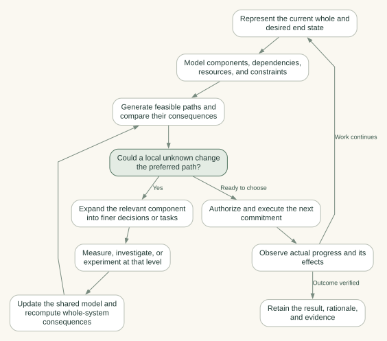

A billion-dollar skyscraper — refining the whole plan as the facts change
The owner wants tenants to move into the lower floors on October 1 while construction continues above. Aura Pro builds a dated picture of the development from approved plans, permits, work in place, purchases, crew commitments, crane availability, and remaining budget. Working back from opening day, the model shows that the elevators and protected entrance should be ready in September. The interiors have time to spare if the façade keeps winter weather out. Ventilation controls the date. The air-handling unit must be in place for a booked round of system testing that finishes September 30.
Aura Pro simulates two sequences using lift records and crew production rates from comparable jobs. Waiting for the air handler before installing the façade gives the mechanical crew easy access, but leaves too much interior work exposed through winter. The better sequence gives the façade crew the crane first. It encloses the floors, leaving one panel out for the later equipment lift. That sequence supports October 1 on one assumption the team can check now: the air handler will pass through the opening on its lifting frame.
Before the panels go up, the foreman measures the one-panel opening and the supplier confirms the width of the unit on its lifting frame. The lift lead repeats the reading and accepts that the straight lift through one bay cannot fit. The superintendent holds the lift and chooses to send the crew to the next approved bay. The foreman proposes holding back two panels. Before the scheduler can compare that sequence with indoor assembly, the lift lead needs to establish whether the framed unit can pass through the wider route. The team checks the route and the lead confirms it will fit.
With clearance settled, the scheduler compares both sequences in the whole development model. Indoor assembly misses the testing slot. The next booking moves the opening forecast three weeks to October 22. With two panels held back, temporary protection lets the façade crew enclose the other bays in time to keep interior work moving. With the revised detail reviewed and the GC project executive’s spending commitment in place, the superintendent releases the crew. The foreman follows the revised instruction: hold back both panels, protect the opening, and close it after the lift. The mechanical team keeps its booked testing slot, preserving the October 1 forecast. The scheduler updates that forecast as work proceeds. The owner’s representative checks the actual lower-floor occupancy date against October 1 to settle whether the opening objective was met. Years later, the facilities manager can retrieve the frame dimensions and the record of which panels went in after the lift.
The question
Starting condition. A whole outcome depends on interacting components, shared resources, and decisions taken at different times. Central question. Which local decisions or unknowns can change the best path for the whole undertaking?
Decision path


Output. A coordinated course of action, a forecast tied to its assumptions, and a reason to acquire the next piece of information. The model gains detail where that detail could change a decision. An unresolved choice about priorities can send the process back to goal discovery.
Related system capabilities
Intent and authority
Define the desired result, the decisions people retain, and the work they delegate.
Project and asset model
Represent what exists, where it is, what depends on it, and what is known as of a date.
General planning and simulation
Compare feasible paths and identify the local unknown that could change the whole plan.
Resources and logistics
Make the needed people, materials, equipment, and access available together.
Work coordination and execution
Carry an authorized choice into physical work and follow it through handoffs.
Project memory and learning
Retain the reasons, evidence, and conditions that can improve a later decision.